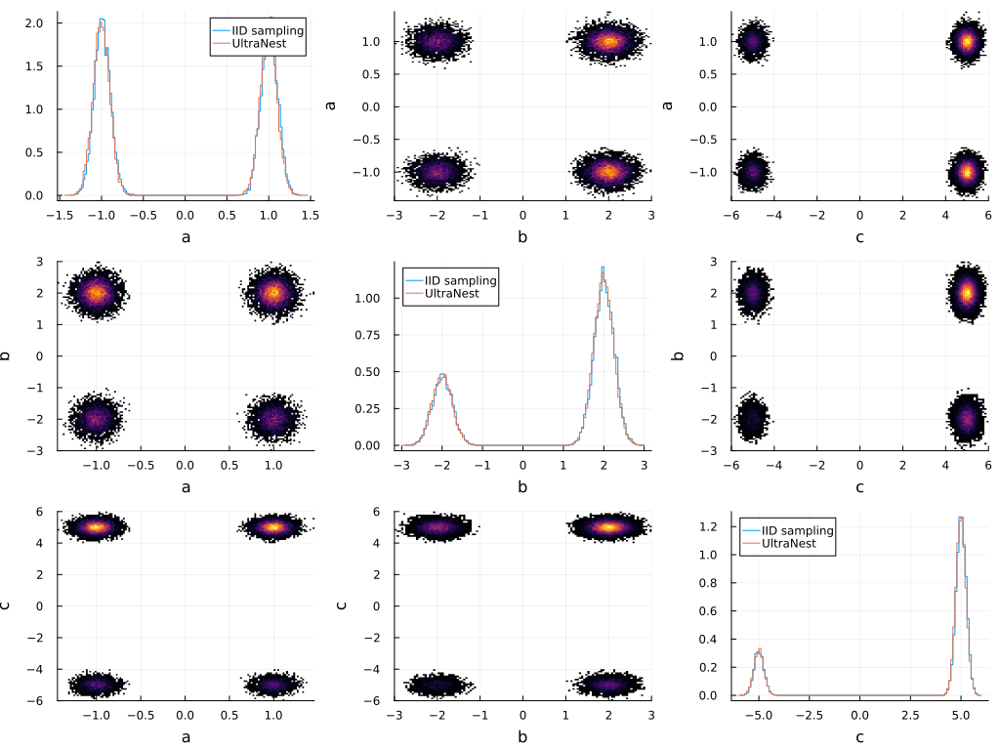

UltraNest.jl
This is a Julia wrapper for Python nested sampling package UltraNest.
Nested sampling allows Bayesian inference on arbitrary user-defined likelihoods. In particular, posterior probability distributions on model parameters are constructed, and the marginal likelihood ("evidence") Z is computed. The former can be used to describe the parameter constraints of the data, the latter can be used for model comparison (via Bayes factors) as a measure of the prediction parsimony of a model.
UltraNest provides novel, advanced techniques (see how it works). They are especially remarkable for being free of tuning parameters and theoretically justified. Beyond that, UltraNest has support for Big Data sets and high-performance computing applications.
This Julia package is currently just a very thin wrapper around the Python ultranest package, which is automatically installed via CondaPkg.jl.
In the future, some Julianic wrapper functions may be added for ultranests main functionalities, but UltraNest.jl is primarily intended to be a lower-level package that can act as a sampling backend for high-level packages.
Currently UltraNest.jl exports a single global constant ultranest. PythonCall.jl makes using ultranest from Julia very similar to the equivalent Python code.
Python:
import ultranest
# ... define log-likelihood and prior_transform ...
paramnames = ["a", "b", "c"]
smplr = ultranest.ReactiveNestedSampler(paramnames, loglikelihood, transform = prior_transform, vectorized = True)
result = smplr.run(min_num_live_points = 400, cluster_num_live_points = 40)Julia:
using UltraNest# ... define log-likelihood and prior_transform ...paramnames = ["a", "b", "c"]smplr = ultranest.ReactiveNestedSampler(paramnames, loglikelihood, transform = prior_transform, vectorized = true)result = smplr.run(min_num_live_points = 4000, cluster_num_live_points = 400)See the UltraNest Python documentation regarding usage.
Convention for matrices holding multiple parameter vectors (resp. multiple samples): In UltraNest.jl, using Julia's column-major array indexing, parameter vectors are stored as rows (not columns) in the matrices.
Usage example
As an example, we'll sample a multi-modal distribution that is tricky to handle using other methods like MCMC.
In addition to UltraNest.jl, we'll be using the Julia packages Distributions.jl, Plots.jl and Measurements.jl, so they need to be added to your current Julia environment to run this example.
Let's define a multi-modal distribution with fully separated modes that will act as our likelihood:
using Distributionsdist = product_distribution([ MixtureModel([truncated(Normal(-1, 0.1), -2, 0), truncated(Normal(1, 0.1), 0, 2)], [0.5, 0.5]), MixtureModel([truncated(Normal(-2, 0.25), -3, -1), truncated(Normal(2, 0.25), 1, 3)], [0.3, 0.7]), MixtureModel([truncated(Normal(-5, 0.25), -6, -4), truncated(Normal(5, 0.25), 4, 6)], [0.2, 0.8]),])To use UltraNest, we need to define express the prior of our model as a transformation from the unit hypercube to the model parameters. Here we will simply use a flat prior over the support dist:
prior_transform = let dist=dist (u::AbstractVector{<:Real}) -> begin x0 = minimum.(dist.v) Δx = maximum.(dist.v) .- x0 u .* Δx .+ x0 endendUltraNest supports vectorized operation, passing multiple parameter vectors to the transformation as a matrix. We need to take into account that in UltraNest.jl, parameters are stored as rows in the matrix:
UltraNest requires callbacks to return numpy arrays:
using PythonCallnp = pyimport("numpy")prior_transform_vectorized = let trafo = prior_transform, np = np (U::AbstractMatrix{<:Real}) -> np.asarray(reduce(vcat, (u -> trafo(u)').(eachrow(U))))endOur log-likelihood will simply be the log-PDF of dist for a given set up parameters:
loglikelihood = let dist = dist function (x::AbstractVector{<:Real}) ll = logpdf(dist, x) # logpdf on MixtureModel returns NaN or -Inf in gaps between distributions, and UltraNest # doesn't like -Inf, so return -1E10: T = promote_type(Float32, typeof(ll)) isnan(ll) || (isinf(ll) && ll < 0) ? T(-1E10) : T(ll) endendTo use UltraNest's vectorized mode, we need a vectorized version of the likelihood as well:
loglikelihood_vectorized = let loglikelihood = loglikelihood, np = np # UltraNest has variate in rows: (X::AbstractMatrix{<:Real}) -> np.asarray(loglikelihood.(eachrow(X)))endFor computationally expensive likelihood functions, it will often be beneficial to parallelize this using Julia's multi-threaded and distributed computing capabilities. Note that the Python UltraNest package comes with MPI support as well - it should also be possible to use this for distributed parallelization, in combination with Julia's muli-threading for host-level parallelization.
Now we're ready to sample our posterior. We'll use UltraNest's ReactiveNestedSampler:
using UltraNestparamnames = ["a", "b", "c"]smplr = ultranest.ReactiveNestedSampler(pylist(paramnames), loglikelihood_vectorized, transform = prior_transform_vectorized, vectorized = true)result = smplr.run( min_num_live_points = 4000, cluster_num_live_points = 400, # Progress output would go to a captured stdout while these docs are # built, which Python cannot write to without blocking: show_status = false, viz_callback = false)Python:
{'niter': 60297, 'logz': np.float64(-5.611997157628393), 'logzerr': np.float64(…
[0.29079816, 0.52697241, 0.96168377],
[0.61365518, 0.86471723, 0.42026862],
...,
[0.75032876, 0.83452227, 0.91641313],
[0.25069155, 0.83312935, 0.91681359],
[0.7496781 , 0.83313741, 0.91645313]], shape=(60297, 3)), 'points': arra…
[-0.83680736, 0.16183444, 5.54020527],
[ 0.45462072, 2.18830337, -0.9567766 ],
...,
... 16 more lines ...
3.99124093e-06, 4.01830934e-06, 0.00000000e+00]],
shape=(60297, 30)), 'logl': array([-1.00000000e+10, -1.00000000e+10, -1.0…
1.04495160e+00, 1.04509978e+00, 1.04537275e+00], shape=(60297,))}, 's…
[-1.08405076, -1.87152751, -4.95368671],
[ 1.17986362, 1.94983632, -5.3164682 ],
...,
[-0.94061816, 1.61222636, 5.00891642],
[ 1.16671135, 1.97853981, 4.9574168 ],
[-0.9677896 , 1.85989639, -5.03155231]], shape=(60297, 3)), 'maximum_li…result is a Python dict that contains the samples (in weighted and unweighted form), the logarithm of the posterior's integral and additional valuable information. Since our prior was flat, we can compare the samples generated by UltraNest with truly random (IID) samples drawn from dist:
X_ultranest = pyconvert(Matrix{Float64}, result["samples"])X_iid = Array(rand(dist, 10^4)')using Plotsfunction plot_marginal(d::NTuple{2,Integer}) if d[1] == d[2] plt = stephist(X_iid[:,d[1]].+0.01, nbins = 200, normalize = true, label = "IID sampling", xlabel = paramnames[d[1]]) stephist!(plt, X_ultranest[:,d[1]], nbins = 200, normalize = true, label = "UltraNest") plt else histogram2d( X_ultranest[:,d[1]], X_ultranest[:,d[2]], nbins = 200, xlabel = paramnames[d[1]], ylabel = paramnames[d[2]], legend = :none ) endendplot( plot_marginal.([(i, j) for i in 1:3, j in 1:3])...,)
The log-integral of the posterior computed by UltraNest is
using Measurementslogz = pyconvert(Float64, result["logz"])logzerr = pyconvert(Float64, result["logzerr"])logz ± logzerr\[-5.612 \pm 0.058\]
which matches our expectation based on the volume of our flat prior:
logz_expected = -log(prod(maximum.(dist.v) .- minimum.(dist.v)))-5.662960480135946In addition to processing UltraNest's output with Julia directly, you can also let ultranest.ReactiveNestedSampler create on-disk output via keyword argument log_dir = "somepath/".